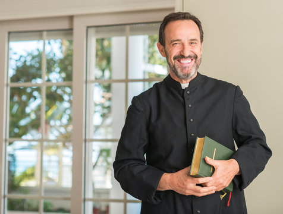
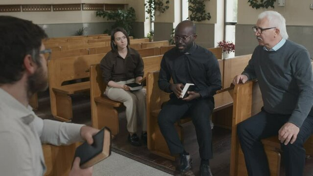

Led by Pastor John Doe, Grace Church of Sanford is a life-giving church serving the Central Florida area.
Grace Church of Sanford has a deep sense of community. We believe that it is important for us to surround ourselve with a community of believers and grow together
We are a part of the Assemblies of God
God is the Creator and Ruler of the universe. He has eternally existed in three personalities: the Father, the Son, and the Holy Spirit. These three are co-equal and are one God. God is eternal — that is, He has no beginning and no end. Psalm 90:2
The Holy Spirit is co-equal with the Father and the Son of God. He is present in the world to make men aware of their need for Jesus Christ. He was sent by the Father to believers to give them power to live our lives for God and power to testify about Christ. Acts 1:8
Salvation is God’s free gift to us but we must accept it. We can never make up for our sin by self-improvement or good works. Only by trusting in Jesus Christ as God’s offer of forgiveness, can anyone be saved from sin’s penalty. When we turn from our self-ruled life and turn to Jesus in faith, we are saved. Romans 6:23
Although every person has been created in the image of God and has tremendous potential for good, all of us are marred by a nature that separates people from God and causes many problems in life. Romans 5:12
That God empowers people through His Holy Spirit to live a life that is separated from evil and totally dedicated to Him. This work begins at the moment of salvation and continues throughout their Christian life. 1 Peter 1:15-16
The Bible teaches that every Christian is called to “full-time” Christian service, regardless of his or her vocation. We practice the truth that every believer is a minister by encouraging every member to find a place of service and ministry. Every believer has direct access to God through prayer and Bible reading. 1 Peter 2:9
It is the responsibility of every Christian to share the Good News with those whom God has brought us into contact. We practice personal sharing about Christ and inviting friends to church. 1 Peter 3:15
Jesus Christ is the Son of God. He is co-equal with the Father. Jesus lived a sinless human life and offered Himself as the perfect sacrifice for the sins of all people by dying on a cross. He arose from the dead after three days to demonstrate His power over sin and death. Matthew 1:23
The Bible is God’s Word to us. It was written by human authors, under the supernatural guidance of the Holy Spirit. It is the supreme source of truth and our sole authority for Christian beliefs and living. Because it is inspired by God, it is the truth without any mixture of error. 2 Peter 1:20-21
The baptism in the Holy Spirit is a separate work from salvation. It is a spiritual gift for believers today. The only way possible to live the Christian life is by God’s power within us. So we seek to receive the gift of the Holy Spirit and to practice the gift of tongues on a daily basis. We believe dependence on God’s Spirit will enable us to do what is right and to be the witness He has destined us to be. Acts 2:4
Those who have not accepted Jesus Christ as their personal Savior will be judged by God in His perfect justice and doomed to eternal condemnation. The time of His return is unknown, but may be at any moment. This is the blessed hope of the church. 1 Thessalonians 4:16-17
Healing is an integral part of the gospel. Deliverance from sickness — body, soul and spirit — is provided for in the death and resurrection of the Lord Jesus Christ and is a privilege of all believers. Matthew 8:16-17
At City Church we practice tithing for the support of Christ’s Body, the church, as God commands. Giving the first 10% of our income is the Biblical standard of giving. A tithe of everything you produce belongs to the Lord. Leviticus 27:30